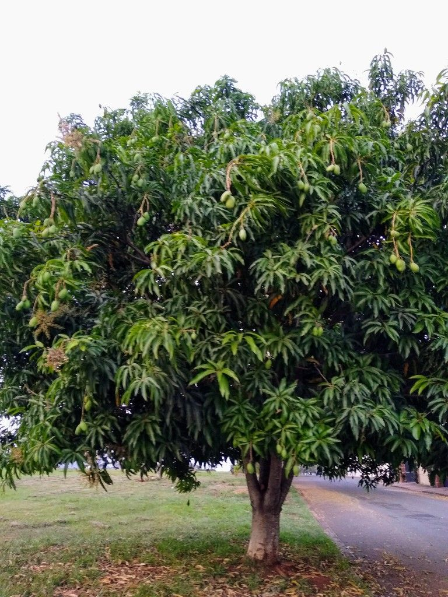
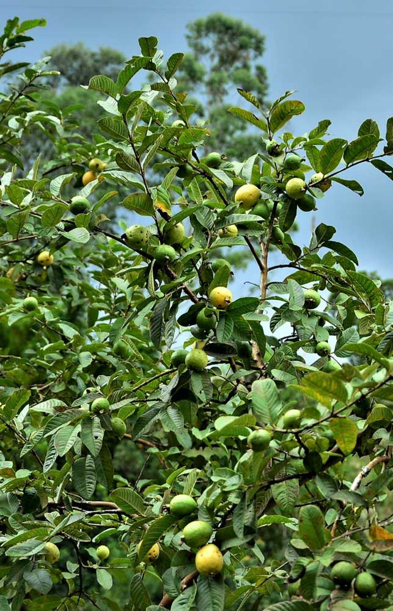
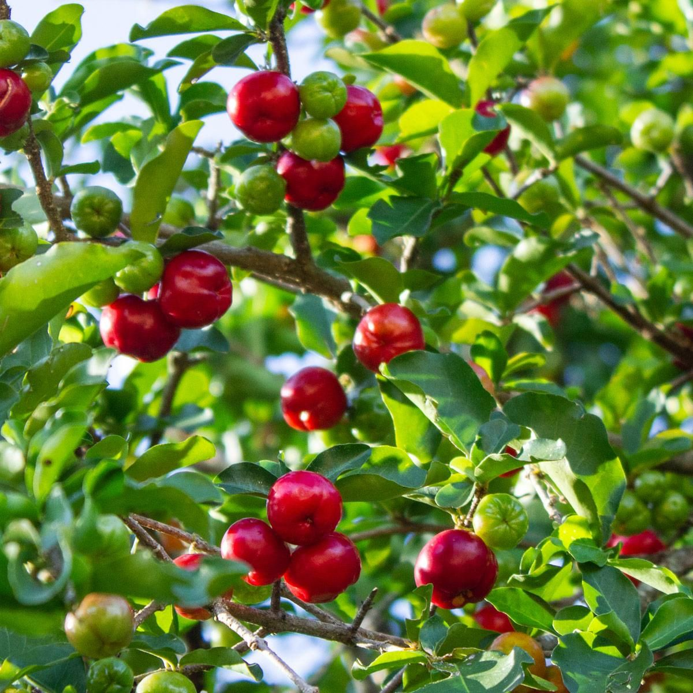
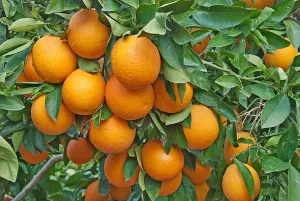
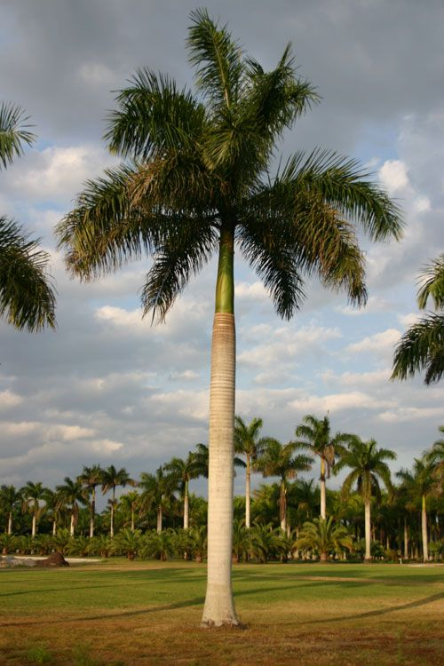
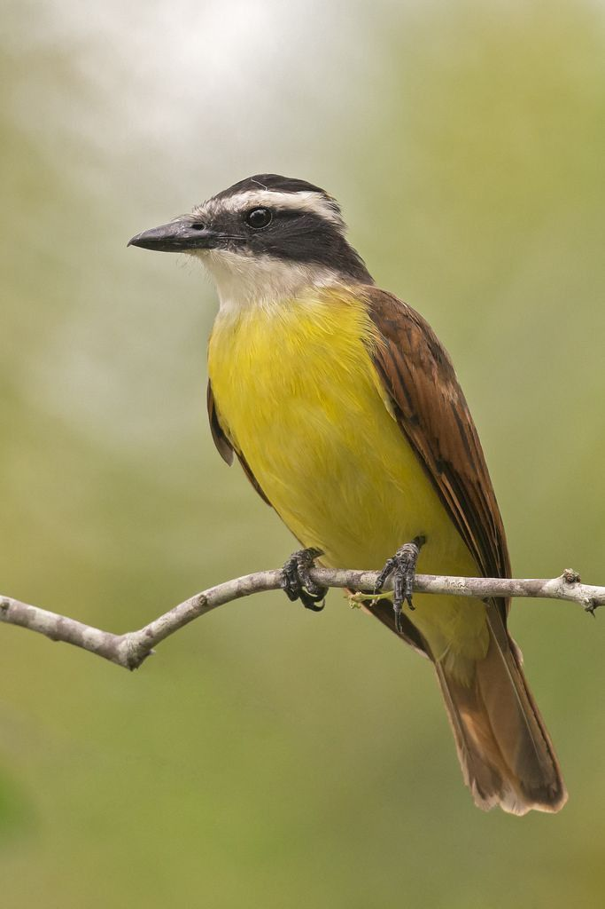
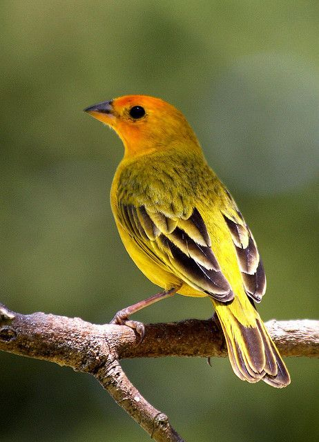
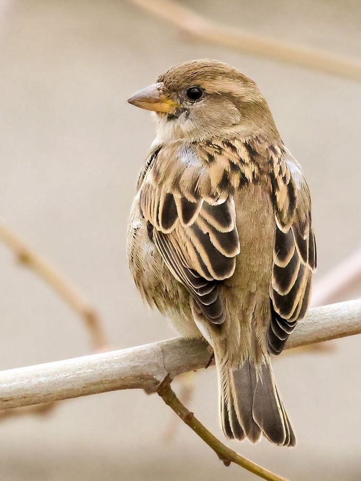

Mangueira
Nome científico: Mangifera indica
Árvore frutífera de grande porte. Seus frutos atraem não apenas os alunos, mas também diversos pássaros locais.
Explore as árvores mapeadas pelo projeto "Dois Homens e Meio" e descubra a fauna que habita nosso campus.
Passe o mouse (ou toque) nos pontos do mapa para ver onde cada árvore está localizada com base em nossos dados catalogados.


Nome científico: Mangifera indica
Árvore frutífera de grande porte. Seus frutos atraem não apenas os alunos, mas também diversos pássaros locais.

Nome científico: Psidium guajava
Planta muito visitada por aves como o Bem-te-vi. Essencial para a cadeia alimentar do campus.

Nome científico: Malpighia emarginata
Arbusto cujas flores são fundamentais para a manutenção das abelhas polinizadoras na região.

Nome científico: Citrus sinensis
Cítrico aromático. O IFES conta com pés de laranja e limão que compõem a paisagem verde.

Família: Arecaceae
Planta ornamental que traz verticalidade e elegância para os acessos do instituto.
A grande quantidade de árvores frutíferas transforma o campus em um verdadeiro refúgio para diversas espécies de aves urbanas e silvestres.

Pitangus sulphuratus
Uma das aves mais populares do Brasil, facilmente identificável pelo seu canto característico. Costuma se alimentar de insetos e pequenos frutos presentes no campus.

Sicalis flaveola
Ave de plumagem amarela vibrante. Gosta de áreas abertas e gramados, sendo frequentemente avistado ciscando sementes pelo chão do IFES.

Passer domesticus
Pequeno e sociável, o pardal é uma espécie muito adaptada ao ambiente urbano. Convive em bandos perto dos pátios e refeitórios.